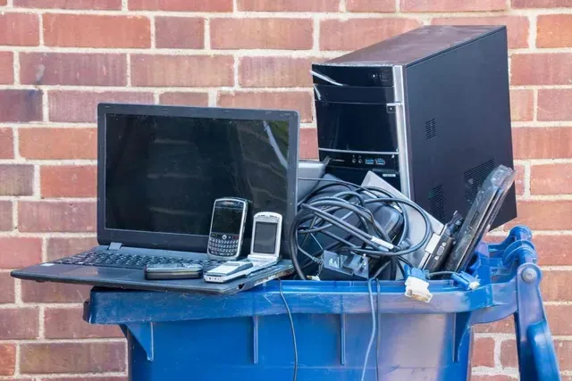

Technician-focused guides
Written around repair decisions, symptoms, and bench workflow.
Technician knowledge library
BIOS guidance, board notes, repair techniques, laptop fault diagnostics, parts knowledge, and recycling education for technicians and refurbishers.
Identify board, chip, voltage, source, and backup before writing.
Cleaner guides, proper checklists, internal links, and legal external references.
Written around repair decisions, symptoms, and bench workflow.
Safe firmware explanations without password-bypass or illegal download promises.
Second-life laptop testing, secure wiping, parts harvesting, and e-waste guidance.
Structured silos, search, internal links, and original topic-specific content.
Cleaner reading experience
TechRecycle now moves away from heavy dark blocks into a lighter, Apple-style interface with spacious sections, soft cards, refined green accents, and article layouts made for long technical reading.
Read technician notes


Complete library
Each silo now has cleaner design treatment and is ready for deeper long-form technical posts.
Firmware
BIOS chip identification, firmware symptoms, official update guidance, EC notes, and safe flashing education.
Board logic
Board numbers, charging circuits, schematic reading, power rails, no-power logic, and board-level repair notes.
Tools
BoardView concepts, programmer tools, repair utilities, diagnostic workflow, and legal/safe software guidance.
Technique
Practical bench methods for thermal work, soldering, multimeter checks, shorts, liquid damage, and component testing.
Diagnostics
Symptom-based diagnostic guides for no power, no display, charging faults, boot loops, overheating, and freezing laptops.
Equipment
Repair tool guidance, replacement parts, upgrade components, test equipment, and future buying guides for technicians.
Reuse
Used laptop testing, secure data wiping, grading, parts harvesting, resale preparation, and responsible e-waste handling.
Field notes
Workshop lessons, repair case notes, model observations, motherboard logs, and field experience from real diagnostics.
Featured diagnostics
High-value bench references for common repair decisions.
Repair tools
Room for future affiliate links, product comparisons, and technician buying guides without aggressive advertising or fake download promises.
CH341A, RT809H, clips, adapters, and safe verification habits.
Voltage checks, continuity testing, resistance checks, and safe probing.
Board repair workflows, temperature caution, and practice guidance.
Pad thickness, contact pressure, paste use, and laptop cooling notes.
Responsible repair
TechRecycle Repair Library provides educational repair information for trained technicians and device owners. Always confirm model numbers, board numbers, and file compatibility before flashing firmware or performing board-level repairs. Incorrect files or procedures may damage the device.